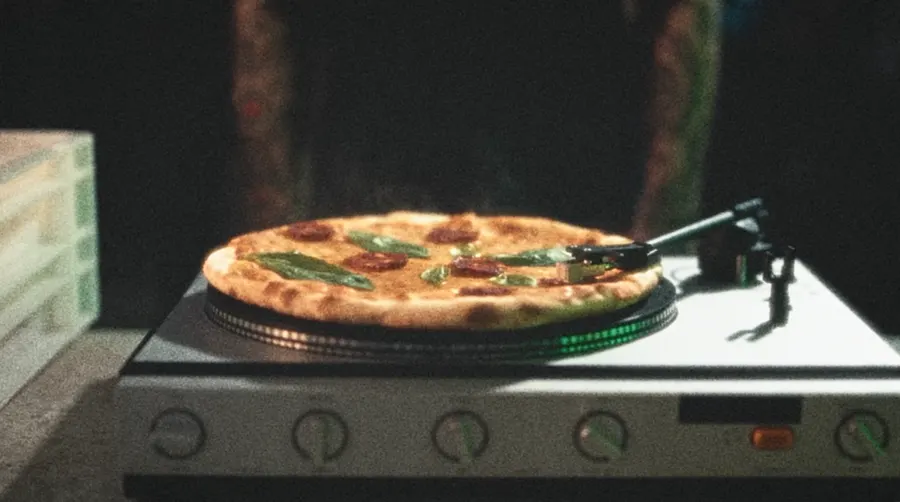
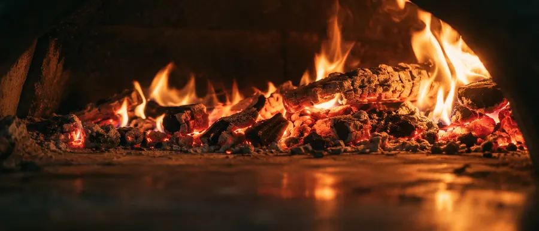

Dossier clientNamur
INCORRECT
Une pizzeria de la rue Haute-Marcelle, à Namur. Cinq communiqués depuis septembre 2025, de la fermentation au film.
- Maison
- Incorrect, pizzeria
- Adresse
- Rue Haute-Marcelle 35, 5000 Namur
- Chef
- Alex
- Premier communiqué
- 12 septembre 2025

Incorrect, le film. Communiqué du 22 octobre 2026.Photo © Anthony Florio
Le dossierChronologie
Le fil des communiqués.
Chaque temps fort de la maison a eu son communiqué et son dossier de presse : la fermentation, la carte de printemps, la terrasse, l’été, puis le film.
Ce que Coup de Food a faitRelevé de la salle de presse
Une histoire racontée en épisodes.
Cinq communiqués, plusieurs dossiers de presse et des suggestions du moment pour accompagner la saison. Incorrect figure aussi dans la sélection terrasses d’avril 2026, aux côtés de Rhubarb, du Château du Mylord, de Rizom et des Garçons Bouchers.
Objectifs, angle et médias visés : à compléter avec Caroline
GaleriePhotos de presse
Les images de la maison.

Les retombéesÀ compléter
Ce que la presse en a dit.
Articles, passages radio ou télé obtenus pour Incorrect : à reprendre de la revue de presse de Caroline.